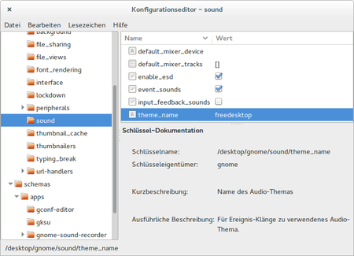

gconf
Dieser Artikel wurde für die folgenden Ubuntu-Versionen getestet:
Ubuntu 14.04 Trusty Tahr
Zum Verständnis dieses Artikels sind folgende Seiten hilfreich:
 gconf
gconf  diente zu Zeiten von GNOME 2 der Konfiguration und Änderung der GNOME-Einstellungen über den Dämon GConfd. Beim Wechsel von GNOME 2 auf GNOME 3, wurde auch gconf durch dconf ersetzt. Da es aber noch einige Programme gibt, die noch auf gconf setzten, ist es immer noch Bestandteil von Ubuntu.
diente zu Zeiten von GNOME 2 der Konfiguration und Änderung der GNOME-Einstellungen über den Dämon GConfd. Beim Wechsel von GNOME 2 auf GNOME 3, wurde auch gconf durch dconf ersetzt. Da es aber noch einige Programme gibt, die noch auf gconf setzten, ist es immer noch Bestandteil von Ubuntu.
Hinweis:
Oft kann es vorkommen, dass zwar ein Schlüssel existieren, die Funktion aber schon von einem dconf Schlüssel übernommen wurde. Eine Änderung dieses Schlüssel betrifft dann nur Anwendungen, die noch auf gconf zurückgreifen, sie greifen aber nicht mehr Systemweit!
Dieser Artikel soll zeigen, wie man mit Hilfe des gconf-editors und des Terminalprogramms gconftool Einstellungen ändern kann.
Grundlagen zum GNOME-Konfigurationssystem GConf¶
GTK2/GNOME-Programme, die noch gconf verwenden, speichern ihre Konfigurationsdateien in Form einer XML-Datei unterhalb von ~/.gconf ab. Verwaltet werden diese XML-Dateien durch den im Hintergrund laufenden GConfd. Dieser regelt die Zugriffe und Änderungen auf diese Dateien.
Die XML-Dateien sind in einer Baumstruktur (Verzeichnisstruktur) organisiert. Diese unterteilt sich in:
| Verzeichnisstruktur | |
| Pfad | Anwendungsbereich |
| apps | Anwendungen |
| desktop | der Arbeitsbereich (Desktop, Panel) |
| schemas | systemweite Schlüsseldefinitionen für Anwendungen |
| system | systemweite Systemeinstellungen zu GNOME |
Die XML-Dateien können natürlich auch von Hand bearbeitet werden. Dies sollte man jedoch nur im Notfall tun, da hierbei der GConfd übergangen wird.
Einstellungen im Konfigurations-Editor¶
Mithilfe des grafische Konfigurationseditor gconf-editor hat man die Möglichkeit, Einstellungen von GNOME und GNOME-Programmen zu bearbeiten, die über die normalen Konfigurationsdialoge nicht zu erreichen sind. Es handelt sich meist um Optionen, die allein für fortgeschrittene Benutzer von Bedeutung sind.
Installation¶
Das Programm ist nicht vorinstalliert, kann aber einfach nachinstalliert[1] werden:
gconf-editor
 mit apturl
mit apturl
Paketliste zum Kopieren:
sudo apt-get install gconf-editor
sudo aptitude install gconf-editor
Konfigurationseditor starten¶
Das Programm kann unter Unity durch:
"System → Konfigurationseditor"
gestartet werden. Alternativ lässt sich der Konfigurationseditor über die Tastenkombination
Alt +
F2 und Eingabe von gconf-editor starten. Da die Einstellungen benutzerspezifisch sind, sollte man den gconf-editor nicht mittels sudo - also Root-Rechten - starten, man würde die falschen Einstellungen bearbeiten.

Konfigurationseditor verwenden¶
Die Einstellungen sind in einer Baumstruktur organisiert. Relevant ist normalerweise der Zweig "apps". Hinweise zu einzelnen Optionen finden sich in den entsprechenden Artikeln. Durch einen Doppelklick auf den Wert, wird dieser beschreibbar und kann verändert werden. Klickt man danach außerhalb des Textfeldes, dann wird die Änderung gespeichert und sofort umgesetzt.
auf den Wert, wird dieser beschreibbar und kann verändert werden. Klickt man danach außerhalb des Textfeldes, dann wird die Änderung gespeichert und sofort umgesetzt.
Experten-Info:
Die Einstellungen werden in xml-Dateien unter ~/.gconf gespeichert und können dort im Problemfall auch von Hand bearbeitet oder selektiv gelöscht bzw. umbenannt werden.
Einstellungen im Terminal¶
Wer das Terminal[2] bevorzugt, kann mit den Befehl gconftool-2 nutzen, der nachfolgend näher erklärt wird.
Installation¶
Das Programm ist im Paket
gconf2
mit apturl
Paketliste zum Kopieren:
sudo apt-get install gconf2
sudo aptitude install gconf2
enthalten. Es ist normalerweise auf jedem System mit Ubuntu vorinstalliert.
Optionen¶
gconftool-2 kennt verschiedene Optionen, von denen im Folgenden einige aufgelistet werden:
| Optionen von gconftool-2 | |
| Option | Beschreibung |
| Client-Optionen | |
-s | Einem Schlüssel einen Wert zuweisen und synchronisieren. In Verbindung mit --type verwenden. |
-g | Den Wert eines Schlüssels auf der Standardausgabe ausgeben. |
-u | Die Schlüssel auf der Befehlszeile zurücksetzen. |
--toggle | Schaltet einen booleschen Schlüssel um. |
-a | Alle Schlüssel-Wert-Paare aus einem Verzeichnis ausgeben. |
--all-dirs | Alle Unterverzeichnisse in einem Verzeichnis ausgeben. |
-R | Alle Unterverzeichnisse und Einträge unterhalb eines Verzeichnisses rekursiv ausgeben. |
-S | Rekursiv nach einem Schlüssel suchen. |
--short-docs | Die kurze Dokumentationszeichenkette für einen Schlüssel anfordern. |
--long-docs | Die ausführliche Dokumentationszeichenkette für einen Schlüssel anfordern |
| Schlüsseltyp-Optionen | |
--type= | Den Typ des zuzuweisenden Wertes angeben. Folgende Werte sind möglich: int|bool|float|string|list|pair |
-T | Den Datentyp eines Schlüssels auf der Standardausgabe ausgeben. |
| Laden/Speichern-Optionen | |
--dump | Eine XML-Beschreibung aller Einträge unterhalb eines Verzeichnisses rekursiv auf der Standardausgabe ausgeben. |
--load | Eine XML-Wertbeschreibung aus der angegebenen Datei laden und diese Werte relativ zu einem Verzeichnis setzen. |
--unload | Ein bestimmte Menge an Werten entladen, die in einer XML-Datei beschrieben werden. |
Eine detaillierte Beschreibung erhält man in den man-Pages oder info-Seiten zu gconftool-2.
Beispiele¶
Als Beispiel dient hier die Einstellung des Vorgabe-Browsers.
Hinweis:
Dieses Beispiel soll den Umgang mit gconftool-2 zeigen. Die Änderung des Vorgabe-Browsers mit Hilfe von gconf hat unter Ubuntu keine Wirkung mehr!
Schlüssel finden¶
Den Eintrag zum Bildschirmschoner suchen:
gconftool-2 --all-dirs /desktop
Als Ausgabe erhält man den XML-Baum unterhalb von /desktop:
/desktop/gnome ...
Nun führt man den gleichen Befehl nochmal für /desktop/gnome aus und wiederholt dies, bis man /desktop/gnome/applications/browser gefunden hat.
Um nun den Inhalt von /desktop/gnome/applications/browser anzuzeigen, nutzt man den folgenden Befehl.
gconftool-2 -a /desktop/gnome/applications/browser
Als Ausgabe erhält man die Schüssel zum "browser".
exec = firefox nremote = true needs_term = false
Dokumentation der Schlüssel¶
Die vollständige Dokumentation zu einem Eintrag erhält man mit:
gconftool-2 --short-docs --long-docs /desktop/gnome/applications/browser/exec
Vorgabe-Browser Für alle URLs voreingestellter Browser.
Änderungen vornehmen¶
Um nun den Wert für exec zu ändern, muss man den Datentyp des Schlüssels kennen.
gconftool-2 -T /desktop/gnome/applications/browser/exec
Da die Ausgabe ergibt, dass der Schlüssel vom Typ string ist, kann man nun den Wert ändern.
gconftool-2 -s /desktop/gnome/applications/browser/exec --type=string chromium-browser
Bei boolschen Werten nutzt man besser die Option --toggle. Diese schaltet den Wert direkt um. Hierbei entfällt dann auch die Option --type.
Um Änderung zu überprüfen, nutzt man die Option -g.
gconftool-2 -g /desktop/gnome/applications/browser/exec
Links¶
GNOME Konfiguration
 Übersichtsartikel
ÜbersichtsartikelgConf
- Projektseite gconftool-2 - Manpage auf manpages.ubuntu.com
- Erstellt mit Inyoka
-
 2004 – 2017 ubuntuusers.de • Einige Rechte vorbehalten
2004 – 2017 ubuntuusers.de • Einige Rechte vorbehalten
Lizenz • Kontakt • Datenschutz • Impressum • Serverstatus -
Serverhousing gespendet von